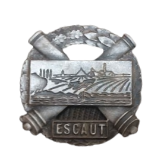

Le Secteur Fortifié de l’Escaut (SFE) constitue l’un des dispositifs défensifs majeurs du nord-est de la frontière française au début de la Seconde Guerre mondiale. Il s’étend de la région de Maulde jusqu’à Wargnies-le-Petit, entre le Secteur Fortifié de Lille à l’ouest et le Secteur Fortifié de Maubeuge à l’est. Structuré en plusieurs sous-secteurs, il protège notamment l’agglomération industrielle de Valenciennes ainsi que la forêt de Raismes, deux zones jugées stratégiques en raison de leur proximité avec la frontière belge.
Le terrain joue un rôle central dans l’organisation de la défense. Le cours canalisé de l’Escaut forme un obstacle naturel important, renforcé par des zones boisées et des positions fortifiées successives. Contrairement aux secteurs plus au nord, les défenses du SFE sont relativement puissantes et diversifiées. Elles combinent ouvrages CORF, blockhaus régionaux, casemates d’artillerie et lignes de défense en profondeur.
Les premières fortifications modernes du secteur apparaissent entre 1931 et 1933 avec la construction de douze casemates CORF de type « Anciens Fronts » dans la forêt de Raismes. Ces ouvrages bétonnés, bien intégrés au terrain forestier, constituent les premiers éléments permanents du système défensif. À partir de 1934, deux casemates CORF de type « Nouveaux Fronts » ainsi que le petit ouvrage d’Eth viennent compléter le dispositif. Initialement, les projets étaient beaucoup plus ambitieux : le site d’Eth devait devenir un véritable ouvrage d’artillerie accompagné d’un ouvrage d’infanterie à Estreux et de nombreuses casemates supplémentaires. Les restrictions budgétaires conduisent cependant à l’abandon de la majorité de ces projets.
Entre 1936 et 1937, une double ligne continue de blockhaus de type « 1re Région Militaire » est construite sur l’ensemble du secteur. Ces positions, plus légères mais nombreuses, assurent une couverture continue de la frontière. Au niveau de Maulde, les défenses sont encore renforcées par un important ensemble de blockhaus STG organisés autour de l’ancien fort Séré de Rivières. Ce « môle défensif » comprend notamment des casemates d’artillerie pour canons de 75 mm et une puissante casemate frontale équipée d’un canon de 155 mm, ainsi qu’un observatoire doté de cloches GFM permettant l’observation du champ de bataille.
À partir de la fin de l’année 1939, une troisième ligne de défense commence à être construite entre Valenciennes et Wargnies. Elle se compose de gros blockhaus FCR destinés à renforcer les positions existantes. Toutefois, comme dans de nombreux secteurs de la Ligne Maginot, les travaux restent largement inachevés lorsque l’armée allemande lance son offensive en mai 1940. Une ultime ligne d’arrêt est même amorcée à proximité d’Avesnes-les-Aubert début 1940 sous l’impulsion de la CEZF, mais elle ne sera jamais achevée.
Le secteur réutilise également des fortifications plus anciennes. Les forts Séré de Rivières de Maulde, Curgies ou Flines, hérités de la fin du XIXe siècle, sont intégrés au dispositif. Les remparts de Condé-sur-l’Escaut, d’origine espagnole puis modernisés par Sébastien Le Prestre de Vauban au XVIIe siècle, sont eux aussi renforcés par plusieurs blockhaus modernes.
Le commandement du SFE évolue plusieurs fois durant la campagne de France. Les généraux Eugène Echard, Henri Hanaut puis Louis Bejard dirigent successivement le secteur. Celui-ci s’appuie principalement sur le 54e Régiment d’Infanterie de Forteresse (RIF), le 17e Régiment Régional de Travailleurs (RRT) et le I/161e Régiment d’Artillerie de Position (RAP). Trois compagnies d’équipage d’ouvrage sont spécialement créées pour assurer la défense des casemates et ouvrages fortifiés du secteur.
Dès août 1939, avant même le déclenchement officiel de la guerre, le SFE est placé en état d’alerte. Initialement dépendant de la 1re Région Militaire de Lille, il passe rapidement sous l’autorité de la 1re Armée puis du 3e Corps d’Armée. Pendant toute la période de la « drôle de guerre », les travaux de fortification se poursuivent intensément : 121 blockhaus sont coulés, 25 kilomètres de fossés antichars sont creusés et plus de 125 kilomètres de réseaux de barbelés sont installés.
Le 10 mai 1940, au déclenchement de l’offensive allemande, la 2e Division d’Infanterie Nord-Africaine quitte le secteur pour rejoindre la Belgique dans le cadre de la manœuvre Dyle-Breda, stratégie alliée destinée à stopper l’avance ennemie le plus loin possible à l’est. Cependant, les percées allemandes sur la Meuse et à Bataille de Sedan bouleversent totalement la situation stratégique.
À partir du 18 mai, le SFE est progressivement menacé sur ses arrières et ses flancs. Les ponts sont détruits, des barrages routiers sont établis et des inondations défensives sont déclenchées autour de Saint-Amand-les-Eaux. Malgré ces efforts, les forces allemandes progressent rapidement. Le 21 mai, les premiers blockhaus tombent dans le secteur de Wargnies-le-Petit. Le lendemain, les Allemands franchissent l’Escaut à Odomez et percent plusieurs positions défensives.
Les combats deviennent particulièrement violents autour de Fresnes-sur-Escaut, Condé-sur-l’Escaut et dans la forêt de Raismes. Valenciennes tombe finalement entre les 24 et 25 mai 1940. Les unités du SFE, sous pression constante, sont contraintes de décrocher progressivement vers Lille puis Dunkerque. Le 26 mai, la perte de plusieurs blockhaus clés entraîne l’effondrement définitif du dispositif défensif. Le petit ouvrage d’Eth ainsi que la casemate de Talandier tombent à leur tour. À cette date, le Secteur Fortifié de l’Escaut cesse pratiquement d’exister en tant que ligne organisée de défense.
Entre le 27 mai et le 3 juin 1940, les survivants du 54e RIF et du 17e RRT se replient jusqu’à Dunkerque dans des conditions extrêmement difficiles. Une partie des soldats parvient à être évacuée vers l’Angleterre lors de l’Opération Dynamo, avant d’être redéployée en Normandie et en Bretagne. De nombreux autres combattants sont cependant capturés lors de la chute définitive de la poche de Dunkerque.
Malgré son inachèvement et la rapidité de l’effondrement militaire français en mai 1940, le Secteur Fortifié de l’Escaut demeure l’un des exemples les plus significatifs des efforts entrepris pour adapter la défense du Nord de la France aux réalités de la guerre moderne.

Insigne du Secteur.